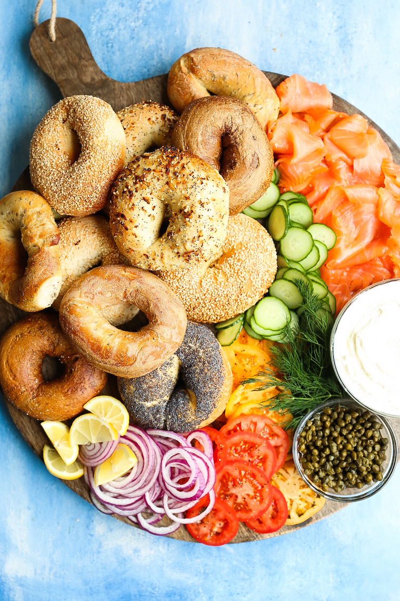

Smoked Salmon Bagel Bar

Description
How to set up the most perfect (yet easiest!) bagel bar! Perfect for brunches and get-togethers! Everyone will be so impressed!
source: https://damndelicious.net/2018/07/01/smoked-salmon-bagel-bar/
Ingredients
- 8 assorted bagels, toasted
- 2 pounds thin-sliced smoked salmon
- 2 heirloom tomatoes, thinly sliced
- 2 Persian cucumbers, thinly sliced
- 1 red onion, thinly sliced
- 1 (8-ounce) package cream cheese spread
- 1/4 cup drained capers
- 1 lemon, cut into wedges
- 1/4 cup fresh dill
Directions
- Arrange bagels, smoked salmon, tomatoes, cucumbers, onion, cream cheese spread and capers on platter or wooden cheese board. Garnish with lemon and dill, if desired.